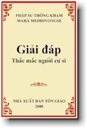

BuddhaSasana
Home Page
This document is written in Vietnamese, with Unicode
Times font
|  |
Giải đáp thắc mắc người cư sĩPháp sư Thông
Kham
|
Theravàda
Ngày nay phong trào nghiên cứu Phật học không còn bị thu hẹp trong giới Phật giáo mà đã phổ biến vào mọi tầng lớp của xã hội, không phần biệt Tôn giáo. Thậm chí có những tôn giáo khác cố vận dụng giáo lý của Ðức Phật, bằng một số hình thức nào đó, phổ biến cho tín đồ của họ. Ðiều đó cho chúng ta thấy rằng kho tàng giáo lý của Ðức Phật rất sống động với thời đại và cũng rất gần gũi với đời thường. Vì bản chất của con người là tham sân si mà giáo lý của Ðức Phật thì đối trị lại tham sân si. Ngày nào chúng ta còn tham sân si là ngày đó chúng ta vẫn còn khổ đau, thất vọng, chán chường và bất hạnh. Chừng nào chúng ta áp dụng giáo lý của Ðức Phật trọn vẹn trong đời sống tu niệm, chắc chắn lúc đó chúng ta sẽ có hạnh phúc, an lạc và có một lối sống vô cùng thảnh thơi. Vì giáo lý của Ðức Phật là một chân lý về nhân bản nên nó bất hủ với thời gian, thích nghi với không gian và hài hòa với cuộc sống nhân loại. Những nhà Phật học và những trung tâm truyền bá chánh Pháp của Ðức Phật trên thế giới đã nhận thấy kho tàng Giáo pháp của Ðức Phật rất quý báu, nên họ cố gắng bằng mọi cách để phổ biến giáo lý này vào đời sống bằng mọi phương tiện như dịch kinh điển ra nhiều thứ tiếng, mở nhiều trung tâm hoằng pháp và trung tâm thiền trên thế giới, nhập tất cả Tam Tạng và chú giải kinh điển vào mạng Internet để phổ biến rộng rãi trên hoàn cầu, nhằm mục đích cho nhân loại am tường Giáo pháp của Ðức Thiên nhân sư và áp dụng có hiệu quả thiết thực. Hòa trong niềm hoan hỷ đó, chùa Kỳ Viên, chúng tôi muốn góp sức giới thiệu những tác phẩm của các vị tiền bối Phật giáo Nguyên Thủy và những bản dịch của Hòa thượng, Thượng tọa, Ðại đức để giúp cho hàng Phật tử có thêm tư liệu nghiên cứu Phật pháp và vững chắc niềm tin tu hành. Nhận thấy tác phẩm Giải Ðáp Thắc Mắc Người Cư Sĩ của tác giả Pháp sư Thông Kham có giá trị và gần gũi với đời sống của người Phật tử nên chúng tôi xin phép xuất bản. Hy vọng món quà đạo vị này sẽ giúp quý vị giải đáp những hoài nghi về đạo pháp. Xin trân trọng giới thiệu tác phẩm này đến quý vị và các bạn. Kỳ Viên, Mùa Hạ
2000 -oOo- |
Chân thành cám ơn Tỳ kheo Thiện Minh, Chùa Kỳ Viên, Quận 3, Sài Gòn,
đã gửi tặng phiên bản vi tính. (Bình Anson, 01-2001)
update: 01-02-2001